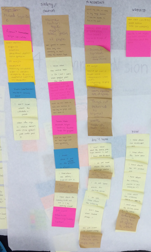
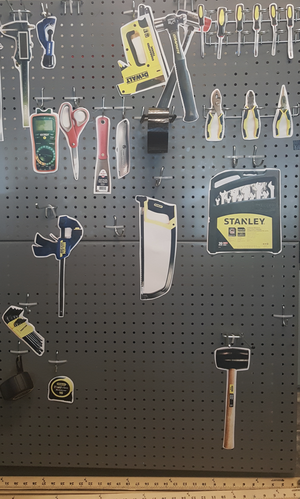

Introduction
The EnVision Maker Studio, an arts and engineering studio, is the first hands-on creative space where students in engineering and visual arts can collaborate on innovative designs at University of California, San Diego. My team and I worked together to improve the overall environment for the new creative space on campus.
The Challenge
Our design opportunity was to provide an approachable and safe environment for students to make the most out of the resources available in the studio. Since the studio opened in January 2016, we anticipated that most users would be new to the space and noticed that new users faced more problems in comparison to experienced users; so our target audience was first-time users of the studio. Through our needfinding process, we narrowed down our opportunity to familiarizing users to the Envision Maker Studio’s physical space and procedures. Our goal was to help users easily identify the locations of different workstations and tools and to facilitate some of the most important procedures required in the studio.
My Role
I led user testing and contributed to rapid prototyping.
The Discovery
From observations and user surveys, we found many students missed the sign in area and the caution taped areas warning about safety googles. After identifying our problem areas using the data collected from our user interviews and observations with our Affinity Diagram. We had signs for our rapid prototyping to see how efficiency and familiarity improved through observations throughout the week. Little improvements were shown and we found many students missing our dull signs so we opted for more colorful signs and a new method to test our prototypes. Our main method of evaluating the efficacy of our second iteration was through a scavenger hunt which we asked users to complete a list of steps that took them around the studio.
The Deliverables
One of our deliverables was a floor plan of the space next to the sign-in station. These act as portable maps that students can reference at their workstations to familiarize themselves with the studio while working on projects. This is meant to help supplement the large signs we have implemented for each station in the studio. The signs are large and brightly colored in order to grab students’ attention and clearly label the space in a way that contrasts the bare, white walls. In our improved scavenger hunt, we tested our studio maps, and found that though our map was straightforward, it limited users’ ability to navigate on their own because they were fixated on the map.
Our data also informed us that many first-time users had no idea where to ask for help in the studio. Therefore, we created a TA/Staff schedule next to the sign-in station to inform students who to ask for assistance. Our prototype testing indicated that users are now aware of where to look for a TA for help. We decided to place all these resources at the sign-in station so upon entrance, students are immediately able to use the space in an effective way.
Lastly, we implemented photos of tools on each of the tool carts in order to clearly indicate where students should return specific tools. This design solution addresses the problem of students not knowing where to return tools and subsequently ending up with inconsistent tools on each of the tool carts. The silhouettes are made of pictures that we took of each tool; they are printed to scale in order to make the process of returning tools efficient and visually intuitive.
The Future
Throughout this process, we learned how certain layouts and design choices would make the EnVision Maker Studio more approachable. From the data we collected from our final prototypes, we found that there is still much to improve on. In the future, we hope to improve on the following: user’s experience of transporting tools and moving the work benches around as students still do not feel the space is theirs.
Take a look at EnVision Maker Studio.